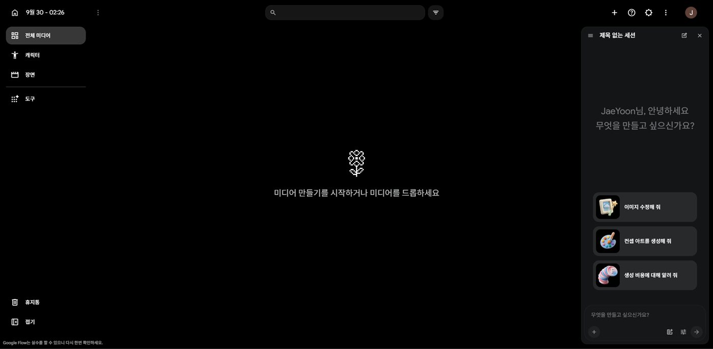
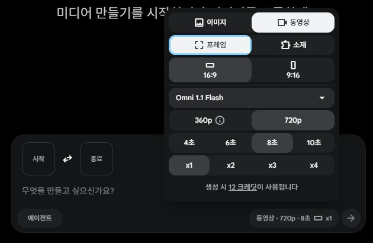

DAY 04AI 스마트스튜디오
Google Flow로 30초 광고 컷 만들기 · AI 광고 음악
이미지를 만들 때는 "한 장이 어떻게 보일까?"를 생각했습니다. 영상에서는 하나가 더 필요합니다. "이 화면에서 무엇이 움직일까?" Flow 사용법을 익힌 뒤, 30초 광고 영상에 쓸 짧은 컷을 10개 넘게 만들고 어울리는 음악까지 준비합니다.
1.오늘의 수업
이미지를 만들어 본, 영상은 처음인 초보자
Flow 익히기 → 30초 광고 컷 10~12개 → 광고 음악
무엇을 움직이고 무엇을 유지할지 나눠 설명해 30초 광고에 쓸 컷과 음악을 준비하기
Google Flow (이미지 · 영상), Gemini (컷 목록 · 음악 만들기)
가상의 음료 브랜드 '톡톡레몬'(레몬 탄산수)이 30초 SNS 광고 영상을 요청했습니다.
"여름 신제품이에요. 시원하고 상큼한 느낌의 30초 광고 영상을 만들어 주세요."
'톡톡레몬'은 수업용 가상 브랜드입니다.
오늘 쓸 크레딧 — 영상 12~15개, 약 200크레딧 (한 번에 1개 · 가장 짧은 길이 기준). Google AI Pro 계정에는 약 1000크레딧이 있고, 영상 1개에 약 15크레딧이 듭니다. 이미지는 크레딧이 들지 않습니다. 정확한 값은 만들기 전에 화면에 표시됩니다.
2.오늘 배우는 내용 & 전체 흐름
3.이미지와 영상의 차이
레몬 탄산수 병이 얼음 위에 놓여 있다.
병은 그대로 있고, 표면의 물방울이 천천히 흘러내린다. 카메라는 병을 향해 천천히 다가간다.
영상에서는 "무엇이 보이는가"에 더해 세 가지를 함께 설명합니다.
4.Flow 화면과 크레딧 아끼는 설정
메뉴 이름과 위치는 업데이트에 따라 다를 수 있습니다. 막히면 Gemini에게 "Google Flow에서 [하고 싶은 것]을 하려면 어디를 눌러야 해?"라고 물어보세요.
STEP 01 새 프로젝트 만들기
labs.google/flow 접속 → Google 계정 로그인 → 새 프로젝트 → 이름 "04_톡톡레몬_이름"
STEP 02 화면 둘러보기





동영상 — 크레딧 사용
- · 이미지를 넣지 않으면 글로만 만든 영상
- · 프레임 — 시작 칸에 이미지를 넣어 그 이미지에서 출발
- · 소재 — 여러 참고 이미지(제품·배경)를 섞어서
- · 화질 · 길이(4~10초) · 개수를 고르면 아래에 예상 크레딧이 보입니다
입력창의 에이전트를 켜면 설정을 고르지 않고 대화로 부탁할 수도 있습니다. 오늘은 설정을 직접 고르며 익히고, 에이전트는 뒤 수업에서 써 봅니다.
STEP 03 크레딧 아끼는 설정 — 꼭 확인
- 개수 — x1. 여러 개를 한 번에 만들면 그만큼 크레딧이 듭니다
- 길이 — 장면에 맞게 내가 정합니다. 짧은 순간이면 짧게, 움직임이 이어지면 길게
- 만들기 전에 아래에 표시되는 예상 크레딧과 남은 크레딧을 확인
- 크레딧 사용을 물으면 승인. 항상 승인은 누르지 않기 — 다음부터 묻지 않고 바로 쓰입니다
결과를 보고 "무엇을 고칠지" 정한 뒤 다시 만듭니다.
5.영상 프롬프트 5칸
| 칸 | 묻는 것 | 예 |
|---|---|---|
| 대상 | 무엇이 나오나 | 레몬 조각이 꽂힌 투명한 탄산수 병 |
| 행동 | 무엇이 움직이나 | 병 속 기포가 천천히 올라온다 |
| 환경 | 어디인가 | 얼음이 깔린 노란 스튜디오 |
| 카메라 | 카메라는 어떻게 | 병을 향해 천천히 다가간다 |
| 분위기 | 어떤 느낌인가 | 상큼하고 시원한 여름 음료 광고 |
6.실습: 글로만 영상 만들기
실습 SET 01 · 영상 1~2개
Flow 설정에서 동영상을 고르고, 이미지 없이 글만 넣어 만듭니다.
결과 확인 — 마음에 드는지보다 "요청대로 됐는지"를 봅니다
- 제품이 잘 보이나?
- 요청한 움직임(기포·물방울)이 나오나?
- 카메라가 요청한 방향으로 움직이나?
- 이상하게 녹거나 모양이 바뀌는 곳은 없나?
"시원한 탄산수 광고 영상 만들어줘"
AI가 병 모양·배경·움직임·카메라를 대부분 마음대로 정합니다.
원하는 방향이 있을 때는 5칸을 채워 AI가 정할 부분을 줄입니다.
7.움직임 · 카메라 키워드
쓰기 전에 알아둘 키워드 — 움직임과 카메라
한국어로 써도 Flow가 잘 알아듣습니다. 영어로 바꿀 필요 없어요.
움직임을 많이 넣을수록 원하는 대로 나오기 어렵습니다.
8.실습: 영상용 이미지 만들기
실습 SET 02 · Flow 이미지 (크레딧 0)
Flow 설정에서 이미지를 고르고 개수를 x2~x4로 둡니다. 크레딧이 들지 않으니 여러 장 받아 고르세요. (Gemini에서 만들어도 됩니다.)
영상의 첫 화면이 될 이미지를 만듭니다. 영상용 이미지는 화려함보다 "무엇이 움직일지 알기 쉬운 것"이 좋습니다. 주인공은 또렷하게, 배경과 잘 구분되게, 소품은 적게.
마음에 드는 이미지를 다운로드해서 "레몬_시작"으로 저장합니다. 오늘 계속 씁니다.
9.실습: 시작 프레임으로 이미지 움직이기
실습 SET 03 · 영상 1~2개
시작 프레임
영상의 첫 장면으로 쓰는 이미지입니다. 내가 준비한 이미지에서 출발하므로 제품 모양을 지키기 쉽습니다.
Flow 설정에서 동영상 → 프레임 → 입력창의 시작 칸에 "레몬_시작" 이미지 넣기
비교하기
AI가 화면을 처음부터 만듦 → 매번 제품 모양이 다름
내가 준비한 이미지에서 출발 → 제품·캐릭터를 유지하기 좋음
10.끝 프레임은 무엇일까?
설명만
Flow에는 시작 이미지와 함께 끝 이미지도 넣는 기능이 있습니다. 시작 화면에서 출발해 끝 화면에 도착하는 영상을 만들어 줍니다.
이 수업에서는 쓰지 않아요
- · 두 이미지가 조금만 달라도 중간에 제품이 녹거나 바뀌는 등 어색해지기 쉽습니다
- · 중간에 무엇이 일어날지 AI가 정하기 때문에 원하는 흐름이 잘 나오지 않습니다
그래서 시작 프레임 + 글로 설명하는 방식으로 장면을 만듭니다.
11.실습: 같은 이미지, 카메라만 바꾸기
실습 SET 04 · 영상 2개
먼저 알기 — 유지할 것과 움직일 것
- · 제품 모양은 그대로
- · 제품 위치는 바꾸지 말고
- · 배경 색은 그대로
- · 인물의 얼굴과 옷은 그대로
- · 물방울만 흘러내리게
- · 배경의 나뭇잎만 흔들리게
- · 카메라만 다가가게
영상이 이상할 때는 프롬프트를 전부 바꾸지 않고 "[유지할 것]은 그대로, [고칠 것]만 바꿔 줘"로 한 가지씩 고칩니다.
"레몬_시작"을 다시 시작 프레임으로 넣고 카메라만 바꾸기
비교하기 — SET 03 영상과 함께
꼭 기억할 한 마디 — "카메라 고정"
카메라가 제멋대로 돌거나 흔들리면 제품 모양도 쉽게 무너집니다. 장면이 자꾸 이상하면 요청 끝에 "카메라 고정"을 붙여 보세요. 움직임은 제품 주변에만 맡기면 결과가 훨씬 안정됩니다.
12.30초 광고 영상이 만들어지는 방법
SNS 광고를 잘 보면 한 장면이 2~3초를 넘지 않습니다. 짧은 컷을 여러 개 찍어 두고, 편집에서 골라 이어 붙인 것입니다. AI 영상도 같습니다. Flow는 한 번에 4~8초짜리 영상을 만들기 때문에, 30초 광고는 컷을 여러 개 만들어 이어 붙여서 완성합니다.
30초 광고 한 편은 대략 이렇게 나뉩니다
컷 하나를 2~3초씩 쓰면 30초에 컷 10~12개가 들어갑니다.
광고에 자주 쓰는 컷 종류
| 컷 종류 | 하는 일 | 톡톡레몬이라면 |
|---|---|---|
| 분위기 컷 | 계절 · 장소를 보여 줌 | 햇살 드는 여름 해변, 흔들리는 파라솔 |
| 제품 등장 | 제품이 처음 나옴 | 얼음 위에 선 병 |
| 클로즈업 | 질감 · 디테일 | 병 표면을 흘러내리는 물방울 |
| 동작 컷 | 무언가 일어남 | 레몬 조각이 잔 속으로 떨어지고 기포가 터짐 |
| 사용 장면 | 사람이 쓰는 모습 | 손이 병을 들어 잔에 따름 |
| 마지막 컷 | 문구 넣을 자리 | 한쪽에 병, 반대쪽은 파란 하늘만 |
13.실습: Gemini로 컷 목록 받기
실습 SET 05 · Gemini
어떤 컷을 만들지 먼저 표 하나로 정리합니다. 길게 기획하지 않고, 받은 표를 보고 몇 군데만 고친 뒤 바로 만들기로 넘어갑니다.
STEP 01 컷 목록 표 받기 — Gemini 새 채팅에서
Gemini는 앞에서 Flow로 만든 영상을 모릅니다. [이미 만든 컷] 칸에는 그 영상이 어떤 장면인지 말로 적어 주세요.
예시는 선크림입니다. 줄마다 무엇을 썼는지만 보고 톡톡레몬으로 바꿔 쓰세요.
STEP 02 받은 표 확인하고 다듬기 — 같은 채팅에서 이어서
확인하기
- 한 컷에 움직임이 하나인가? (둘 넘으면 원하는 대로 잘 안 나옵니다)
- "찬란한, 압도적인" 같은 꾸미는 말이 많지 않은가?
- 사람 얼굴이 크게 나오는 컷은 없나? (컷마다 얼굴이 달라지기 쉬워 손만 나오는 편이 안전합니다)
- 컷 종류가 골고루 섞였나? (비슷한 컷만 여러 개면 지루합니다)
걸리는 곳이 있으면 이렇게 이어서 요청합니다.
다듬은 표가 나오면 이 채팅은 닫지 말고 열어 두세요. 컷을 만들 때 계속 보면서 한 줄씩 옮겨 씁니다.
14.실습: 광고 장면 이미지 만들기
실습 SET 06 · Flow 이미지 (크레딧 0)
컷마다 글로만 만들면 병 모양과 색이 컷마다 달라집니다. 그래서 자주 나오는 장면을 이미지로 먼저 만들어 두고, 그 이미지를 시작 프레임으로 씁니다. 이미지는 크레딧이 들지 않으니 x2~x4로 받아 고르세요.
STEP 01 유지 문장 정하기
모든 이미지와 컷에 똑같이 붙일 한 줄입니다. 제품 모양 · 색 · 전체 색감을 적습니다. 메모장에 써 두고 계속 복사해서 씁니다.
STEP 02 장면 이미지 세 장 만들기 — Flow에서 이미지 선택
이 세 장을 만들어 보기
- ① 제품이 잘 보이는 광고 장면, 저장 이름 장면_제품
- ② 손이 제품을 쓰는 장면, 저장 이름 장면_사용
- ③ 한쪽에 제품, 반대쪽은 문구 넣을 빈자리, 저장 이름 장면_마지막
오늘 만드는 이미지와 컷은 모두 세로 9:16으로 맞춥니다. 비율이 섞이면 편집할 때 검은 띠가 생깁니다. 구도 · 빛은 DAY 02에서 배운 키워드를 그대로 쓰면 됩니다.
15.실습: 광고 컷 10~12개 만들기
실습 SET 07 · 영상 7~8개
앞에서 만든 톡톡레몬 영상 3~4개에 새 컷 7~8개를 더해 모두 10~12개를 채웁니다.
STEP 01 만들기 전에 설정 맞추기
| 항목 | 설정 |
|---|---|
| 개수 | x1 |
| 길이 | 가장 짧게 (4초 안팎) — 편집에서 1~2초만 쓰니까 길게 만들 필요가 없습니다 |
| 비율 | 세로 9:16 (모든 컷 같게) |
STEP 02 컷 목록 순서대로 한 컷씩 만들기 — Flow에서
기다리지 말고 다음 컷 쓰기
- 1컷 하나를 넣고 만들기를 누릅니다
- 2만들어지는 동안 컷 목록에서 다음 컷 요청을 씁니다
- 3완성되면 확인하고, 괜찮으면 바로 다운로드합니다
컷마다 만드는 방법 고르기
| 이런 컷이면 | 이렇게 만들기 |
|---|---|
| 장면 이미지가 있는 컷 | 동영상 → 프레임 → 시작 칸에 그 이미지 넣기 |
| 제품은 나오는데 이미지가 없는 컷 | 동영상 → 소재 → 장면_제품 이미지를 넣고 "이 이미지의 병을 사용해줘" |
| 제품이 안 나오는 분위기 컷 | 이미지 없이 글로만 |
STEP 03 마음에 드는 컷 하나는 카메라만 바꿔 한 번 더 만들기
SET 04에서 한 방법 그대로입니다. 같은 장면을 다가가기 · 고정 · 옆으로처럼 카메라만 바꿔 두 개 만들어 두면, 편집할 때 번갈아 써서 같은 장면도 지루하지 않게 이어 붙일 수 있습니다.
다운로드한 영상은 "04_톡톡레몬_컷" 폴더에 모으고, 컷 목록 번호대로 이름을 붙입니다 — 01_분위기, 02_등장, 03_클로즈업 … 앞에서 만든 영상도 번호를 붙여 같은 폴더에 넣습니다. 다음 시간 편집은 이 폴더 하나로 시작합니다.
16.실습: 컷을 순서대로 보고 한 컷만 다시 만들기
실습 SET 08
STEP 01 번호 순서대로 재생하며 확인하기
확인하기
- 모든 컷에서 같은 제품처럼 보이나? (병 모양 · 색)
- 혼자만 색감이 튀는 컷은 없나?
- 모든 컷이 세로 9:16인가?
- 화면에 글자가 생긴 컷은 없나?
- 마지막 컷에 문구 넣을 빈자리가 있나?
STEP 02 가장 어색한 컷 하나만 다시 만들기 — 그 컷을 만든 곳에서 이어서
글자가 생겼다면 "화면의 글자를 모두 없애줘"를 붙입니다. 두 번 고쳐도 어색하면 그 컷은 빼도 괜찮습니다. 넉넉하게 만들어 둔 다른 컷으로 편집에서 채웁니다.
17.실습: 30초 광고에 어울리는 음악 만들기
실습 SET 09 · Gemini 음악 (Lyria)
Gemini의 음악 만들기는 Google의 음악 AI Lyria로 곡을 만듭니다. 작곡과 연주는 AI가 하고, 우리는 어떤 음악이 필요한지 설명합니다. 한 번에 만들어지는 곡이 약 30초라 오늘 광고 길이와 잘 맞습니다.
STEP 01 무엇을 정할지 고르기
아래에서 하나씩 골라 이어 쓰면 음악 요청문이 됩니다. ★ 표시는 꼭 넣습니다.
| 정할 것 | 고를 수 있는 예 |
|---|---|
| 용도 ★ | 30초 SNS 광고 배경음악 · 브이로그 · 매장 배경음악 |
| 장르 ★ | 밝은 팝 · 광고 음악(CM송 · 징글) · 어쿠스틱 · 로파이(잔잔한 비트) · 재즈 · 시네마틱 · K-pop |
| 분위기 ★ | 상큼한 · 차분한 · 신나는 · 고급스러운 · 따뜻한 · 긴장감 있는 |
| 보컬 ★ | 보컬 없음(배경음악) · 여성 / 남성 목소리 · 합창 |
| 빠르기 | 느리게 · 중간 · 빠르게 |
| 악기 | 피아노 · 기타 · 우쿨렐레 · 신시사이저 · 드럼 · 현악기 · 휘파람 |
| 흐름 · 끝 | 가볍게 시작해 밝게 마무리 · 끝은 서서히 작아지게 |
"○○ 가수 노래처럼" 대신 장르 · 빠르기 · 악기로 설명합니다. 결과도 더 정확하고, 남의 노래를 흉내 내는 위험도 줄어듭니다.
STEP 02 Gemini에서 음악 만들기 — Gemini 새 채팅에서
- 1Gemini 입력창 옆 +(도구)를 누릅니다
- 2음악 만들기를 고릅니다 (안 보이면 Gemini에게 "음악을 만들고 싶어. 어디서 해?"라고 물어보세요)
- 3아래 작성 틀을 채워 보냅니다
STEP 03 들어 보고 한 가지만 바꿔 다시 만들기
컷을 몇 개 틀어 놓고 음악과 같이 들어 봅니다. 어울리지 않는 곳이 있으면 한 가지만 바꿔 요청합니다.
마음에 드는 곡을 내려받아 "음악_톡톡레몬"으로 저장하고, 컷과 같은 "04_톡톡레몬_컷" 폴더에 넣습니다.
18.막혔을 때 & 더 해 보기
| 이럴 때 | 이렇게 |
|---|---|
| 영상 만드는 데 오래 걸려요 | 정상입니다. 기다리는 동안 컷 목록에서 다음 컷 요청을 써 두기 |
| 컷마다 병 모양이 달라요 | 글로만 만들기 대신 시작 프레임이나 소재 방식으로 바꾸고, 유지 문장 붙이기 |
| 화면에 이상한 글자가 생겨요 | "화면의 글자를 모두 없애줘"로 다시. 안 되면 그 컷은 빼기 |
| 음악 만들기 메뉴가 안 보여요 | Gemini에게 "음악을 만들고 싶어. 어디서 해?"라고 묻기. 계정 · 지역에 따라 메뉴 이름이 다를 수 있습니다 |
| 다운로드한 파일이 어디 있는지 몰라요 | 컴퓨터의 "다운로드" 폴더 확인 → "04_톡톡레몬_컷" 폴더로 옮기기 |
| 크레딧이 빨리 줄어요 | 개수가 x1인지, 길이가 가장 짧은지 다시 확인 |
빨리 끝났다면 — 더 해 보기
- · 컷 목록에서 다른 종류의 컷 2~3개를 더 만들어 편집 재료 늘리기
- · 분위기만 바꾼 음악을 하나 더 만들어 두 곡 비교하기
19.오늘의 결과물
다음 시간에는 "04_톡톡레몬_컷" 폴더로 편집을 시작합니다. 컷과 음악이 모두 이 폴더에 들어 있는지 확인하고, 학원 컴퓨터가 초기화될 수 있으니 USB나 Google Drive에도 올려 두세요.
20.오늘의 핵심 & 다음 수업
영상은 나눠서 설명하기
30초 광고는 짧은 컷을 넉넉하게 만들어 편집으로 이어 붙입니다. 같은 이미지와 유지 문장으로 컷을 맞추고, 글자는 편집에서 넣습니다.
DAY 05 — 30초 광고 완성 · 4컷 만화로 애니메이션 만들기
오늘 만든 컷과 음악을 CapCut으로 잘라 이어 붙이고, 광고 문구를 넣어 30초 광고를 완성합니다. 이어서 4컷 만화를 만들고, 그 만화로 간단한 애니메이션을 만들어 봅니다. 오늘 컷을 다 만들지 못했어도 괜찮습니다. 다음 시간에 수업용 컷으로 함께 시작합니다.